Menü
Müşterinizin aradığını bulduran, öne çıkarmak istediğinizi gösteren QR menü.
MASADAN SERVİSE DİJİTAL RESTORAN SİSTEMİ
Dijital menü, müşteri deneyimi ve servis operasyonu tek sistemde. Müşteriniz beklemesin, garsonunuz satışa odaklansın.
Müşteriniz menüde aradığını bulmak için garson beklemez. QR kodu okutur, menüyü kendi dilinde inceler, filtrelerle aradığını bulur ve sorularını Menü Asistanı'na sorar. İsterse siparişini verir, ister garson veya hesap talep eder. Ekibiniz ise gelen talepleri kendi servis uygulamasından yönetir.

Akıllı filtre, menü asistanı ve garson çağırma tek ekranda.
Peki, Bu Sistem Ciroya Nasıl Katkı Sağlar?
ÜRÜNÜN YAPISI
Müşterinizin aradığını bulduran, öne çıkarmak istediğinizi gösteren QR menü.
Müşteriniz masadan seçer, ekstrasını belirler ve siparişini verir.
Müşteriniz garson çağırır veya hesap ister; ekibiniz bildirimi alır.
Menünüzde neyin ilgi gördüğünü verilerle görürsünüz.
Turist müşteriler işletmenize tek seferlik mi geliyor?
Çoklu Dil modülü ile turist müşterilerin %87'si tekrar ziyaret etti.
Yabancı misafiriniz menüyü kendi dilinde okuyor
Müşteriniz menüyü alerjen, kalori, fiyat ve ürün etiketlerine göre daraltır, istediği ölçüte göre sıralar. Hepsi ürünlerinize girdiğiniz bilgiyle çalışır. Müşteriler istediğini daha kolay bulur, kendine uygun seçimi yapar ve menünüzden daha memnun ayrılır.
14 alerjenden seçtiklerini hariç tutar; bu alerjenlerle işaretlediğiniz ürünler listede gösterilmez.
Fiyat, protein, karbonhidrat ve acılığa göre; ayrıca A → Z ve Önerilen. Toplam 8 sıralama.
Kalori ve fiyat aralığı, Popüler, Yeni, Önerilen ve İndirimli etiketleriyle birlikte tek panelde.
Müşteriniz aradığı özellikteki ürünü saniyeler içinde buluyor
Garsonunuz sadece siparişi alsın.
Müşterinizin her sorusuna menü anında cevap versin
Garsonunuz aynı soruyu onuncu kez cevaplamasın.
Müşteri menü hakkında sorusunu yazar; asistan yanıtını restoranınızın kendi ürün, açıklama ve fiyat bilgilerine dayandırır, uygun ürünü menüden önerir. Menüde karşılığı olmayan soruda uydurmaz; yalnızca sizin girdiğiniz bilgilerle konuşur ve eksik bilgileri size bildirir. %75'i garson beklemeden ürün seçip siparişini verebiliyor.
Ürün, açıklama ve fiyatlarınıza bakarak yanıt verir; menüde olmayan ürün ya da fiyat uydurmaması için yönlendirilir.
Önerdiği ürünü menüdeki adı ve fiyatıyla kart olarak gösterir. Hangi ürünlerin önerileceğini Ürün Önerileri ekranından siz yönetirsiniz.
Gerekirse ekibiniz sohbeti devralır. Asistanın hangi cihaz ve saatlerde görüneceğini, oturum başına mesaj sınırını siz belirlersiniz.
Tüm masalarınız tek seferde QR koda dönüşüyor
10 masa için QR hedefleri oluşturuluyor.
Her masayı ayrı QR ile tanımlayın; müşteri hangi masadaysa sistem bunu bilir. Masaları tek tek veya toplu açın, kodları PNG ya da PDF yazdırın. Masa sayısına sınır koymadan QR oluşturun.
Müşteri garson beklemeden çağırır, hesap ister veya sipariş gönderir. Talepler masa adıyla servis paneline düşer.
Ekip kaydı Bekliyor’dan ilerletir; yeni talep sesli uyarı ve tarayıcı bildirimiyle duyurulabilir. Hiçbir talep kaybolmaz; hangi masanın ne istediğini ekip anında görür.
Menüden tek dokunuş; talep masa adıyla panele düşer.
İstek hangi masadan geldiğiyle görünür.
Garson, hesap ve sipariş aynı akışta; ekip durumu günceller.
Sipariş masadan çıkıyor, panelinize anında düşüyor
Garson çağırma ve hesap talepleri de ekibinize tek ekranda ulaşır.
Hangi ürünler bakılıyor, ilgi ne zaman artıyor, menüde neyi öne çıkarabileceğinizi görürsünüz.
Satışı ve ilgiyi aynı ekranda izler, menünüzü buna göre düzenlersiniz. Tahminle değil, menünüzün gerçek verisiyle karar verirsiniz.
Menü görüntüleme ve ürün tıklamasını izleyin; en çok ilgi görenleri ve saatleri görün.
İlgi ve satış payına göre hangi ürünün öne çıkacağını netleştirir.
Maliyeti siz girersiniz; satışla birleşince ürün başına kalan tutarı görürsünüz.
Puan ve yorumları panelde toplayın; yayını siz yönetirsiniz.
Demo menüyü açın: dilini değiştirin, alerjene göre filtreleyin, Menü Asistanı’na sorun, garson çağırın. Misafiriniz ne görecekse onu görün; uygulama indirmeniz gerekmez.
QR Menu Official • İşletmeciler
Garson, menü ve servis tarafında günlük işleyişin nasıl değiştiğini onlardan dinleyin.
Kurulumu sizin yerinize biz yaparız. Paketinizi seçip menünüzü gönderdikten sonra dijital menünüz, yeni ürün görselleriyle birlikte 3 gün içinde hazır olur.
İşletmenize uygun paketi seçersiniz; menünüzde hangi modüllerin açılacağı burada belirlenir.
Paket ve modüller net Paketleri inceleyinMevcut menünüzü elinizdeki hâliyle bize iletirsiniz. Sisteme girişi siz yapmazsınız; o kısım bizde.
Menünüz bizdeMenünüzü sisteme biz kurarız ve ürünleriniz için yeni ürün görselleri hazırlarız. Dijital menünüz 3 gün içinde hazır olur.
Dijital menü + yeni görsellerMasalarınızın QR kodları yazdırılmaya hazır gelir. Müşteri okutur, menüyü açar; talepler servis paneline düşer.
İlk talep paneldeSistemin ne yaptığını ve ne yapmadığını kısa cevaplarla topladık.
Modülleri ve kapsamı yan yana görün; işletmenize uygun paketi seçin, kurulumu biz yapalım.
Paketleri İnceleyin →Restoran ve kafeler için dijital QR menü ve servis sistemidir. Müşteri masadaki QR’ı okutarak menüyü açar; ürünleri filtreleyebilir, Menü Asistanı’na soru sorabilir, garson ya da hesap çağırabilir. Talepler masa bilgisiyle servis paneline düşer, menü hareketleri istatistik ekranında izlenir. Hangi modüllerin açık olduğu lisansınıza göre belirlenir.
QR Menu Official, WordPress üzerinde çalışan bir eklentidir ve lisans anahtarıyla etkinleştirilir. Ardından menü, ürün bilgileri, masalar ve servis paneli yönetim panelinden hazırlanır. Her adımda ne yapıldığını yukarıdaki Kurulum bölümünde görebilirsiniz.
Evet. Sepetle sipariş, yönetim panelinden açılıp kapatılabilen bir özelliktir; açık olduğunda sipariş masa bilgisiyle servis paneline düşer. Sistem ödeme almaz; ödemeyi bugün kullandığınız yöntemle alırsınız.
Dilleri siz eklersiniz; çeviriler CSV dosyasıyla toplu olarak ya da elle girilir. Sistem menüyü kendiliğinden çevirmez. Müşteri menüyü eklediğiniz dillerden birinde görüntüler.
Hayır. Asistan menüdeki ürünleri ve bilgileri kullanarak yanıt verir. Cevaplayamadığı sorular yönetim panelinde ayrı bir listede toplanır; gerektiğinde personel sohbeti devralabilir.
Filtreler, ürünlere girdiğiniz bilgilerle çalışır: 14 alerjen için hariç tutma, kalori aralığı, fiyat aralığı ve ürün özellikleri (Popüler, Yeni, Önerilen, İndirimli). Menüde ürün arama ve sıralama da vardır; sıralamada acılık seviyesi, protein ve karbonhidrat kullanılır. Vegan, vejetaryen ve glütensiz bilgisi ürün detayında etiket olarak görünür; ayrı bir filtre değildir. Alerjen atanmamış ya da kalorisi girilmemiş bir ürün için sonuç doğru çıkmaz; sistem bu bilgileri kendisi tespit etmez.
Sipariş, garson ve hesap talepleri masaya bağlı, imzalı bir oturum üzerinden iletilir. Oturum yalnızca sistemde kayıtlı masalar için açılır ve dışarıdan değiştirilemez. Süresi sınırlıdır: varsayılan olarak 90 dakika sürer, 30 dakika işlem olmazsa kapanır; süreleri siz belirlersiniz. Masadaki QR’ı okutan herkes o masanın oturumunu açabilir; süre ve talep sınırları bu kullanımın kapsamını daraltır.
Müşterinin menü üzerinden bıraktığı puan ve yorumlar yönetim panelinizde toplanır; olumsuz olanlar ayrı bir listede görünür. Böylece şikâyeti doğrudan siz duyarsınız.
Müşteri menüyü kendi dilinde inceler, sorar, garsonu ya da hesabı çağırır; talep masa bilgisiyle servis paneline düşer. Hepsi tek sistemin parçası.